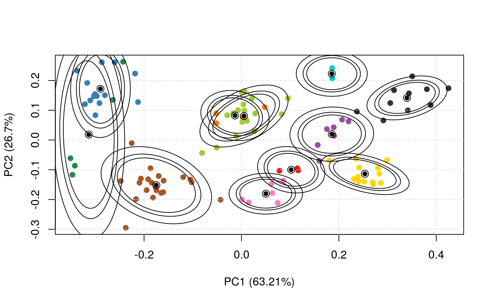

vignettes/pRoloc-bayesian.Rmd
pRoloc-bayesian.RmdFor an in-depth description of the infrastructure for Bayesian spatial proteomics, please see
A Bayesian Mixture Modelling Approach For Spatial Proteomics Oliver M Crook, Claire M Mulvey, Paul D. W. Kirk, Kathryn S Lilley, Laurent Gatto bioRxiv 282269; doi: https://doi.org/10.1101/282269
Analysis of the spatial sub-cellular distribution of proteins is of vital importance to fully understand context specific protein function. Some proteins can be found with a single location within a cell, but up to half of proteins may reside in multiple locations, can dynamically relocalise, or reside within an unknown functional compartment. These considerations lead to uncertainty in associating a protein to a single location. Currently, mass spectrometry (MS) based spatial proteomics relies on supervised machine learning algorithms to assign proteins to sub-cellular locations based on common gradient profiles. However, such methods fail to quantify uncertainty associated with sub-cellular class assignment. Here we reformulate the framework on which we perform statistical analysis. We propose a Bayesian generative classifier based on Gaussian mixture models to assign proteins probabilistically to sub-cellular niches, thus proteins have a probability distribution over sub-cellular locations, with Bayesian computation performed using the expectation-maximisation (EM) algorithm (coined TAGM-MAP, for maximum a posteriori), as well as Markov-chain Monte-Carlo (coined TAGM-MCMC). Our methodology allows proteome-wide uncertainty quantification, thus adding a further layer to the analysis of spatial proteomics. Our framework is flexible, allowing many different systems to be analysed and reveals new modelling opportunities for spatial proteomics. We find our methods perform competitively with current state-of-the art machine learning methods, whilst simultaneously providing more information. We highlight several examples where classification based on the support vector machine is unable to make any conclusions, while uncertainty quantification using our approach provides biologically intriguing results. To our knowledge this is the first Bayesian model of MS-based spatial proteomics data.
We will use a subsest of the tan2009r1 dataset from the Biocexptpkg("pRolocdata") to illustrate the TAGM-MAP method
library("pRolocdata")
data(tan2009r1)
set.seed(1)
tan2009r1 <- tan2009r1[sample(nrow(tan2009r1), 400), ]The first step is to generate the model parameters using the tagmTrain function, that will generate an instance of class MAPParams.
library("pRoloc")
p <- tagmTrain(tan2009r1)
p## Object of class "MAPParams"
## Algorithm: MAPThe results of the modelling can be visualised with the plotEllipse function. The outer ellipse contains 99% of the total probability whilst the middle and inner ellipses contain 95% and 90% of the probability respectively. The centres of the clusters are represented by black circumpunct (circled dot).
plotEllipse(tan2009r1, p)
The MAPParams object can now be used to classify the proteins of unknown localisation using tagmPredict.
res <- tagmPredict(tan2009r1, p)The new feature variables that are generated are:
tagm.allocation: the TAGM-MAP predictions for the most likely protein sub-cellular allocation.table(fData(res)$tagm.allocation)##
## Cytoskeleton ER Golgi Lysosome mitochondrion
## 17 95 24 8 34
## Nucleus Peroxisome PM Proteasome Ribosome 40S
## 25 3 114 19 30
## Ribosome 60S
## 31tagm.probability: the posterior probability for the protein sub-cellular allocations.summary(fData(res)$tagm.probability)## Min. 1st Qu. Median Mean 3rd Qu. Max.
## 0.0000000 0.0003256 0.0049051 0.2731639 1.0000000 1.0000000tagm.outlier: the probability for a protein to be assigned to the outliers class rather than any of the provided sub-cellular classes.summary(fData(res)$tagm.outlier)## Min. 1st Qu. Median Mean 3rd Qu. Max.
## 0.0000 0.0000 0.9948 0.7266 0.9996 1.0000sessionInfo()## R Under development (unstable) (2018-04-02 r74505)
## Platform: x86_64-pc-linux-gnu (64-bit)
## Running under: Ubuntu 14.04.5 LTS
##
## Matrix products: default
## BLAS: /usr/lib/atlas-base/atlas/libblas.so.3.0
## LAPACK: /usr/lib/lapack/liblapack.so.3.0
##
## locale:
## [1] LC_CTYPE=en_GB.UTF-8 LC_NUMERIC=C
## [3] LC_TIME=en_GB.UTF-8 LC_COLLATE=en_GB.UTF-8
## [5] LC_MONETARY=en_GB.UTF-8 LC_MESSAGES=en_GB.UTF-8
## [7] LC_PAPER=en_GB.UTF-8 LC_NAME=C
## [9] LC_ADDRESS=C LC_TELEPHONE=C
## [11] LC_MEASUREMENT=en_GB.UTF-8 LC_IDENTIFICATION=C
##
## attached base packages:
## [1] stats4 parallel stats graphics grDevices utils datasets
## [8] methods base
##
## other attached packages:
## [1] pRolocdata_1.19.0 pRoloc_1.21.1 MLInterfaces_1.61.1
## [4] cluster_2.0.7-1 annotate_1.59.0 XML_3.98-1.11
## [7] AnnotationDbi_1.43.1 IRanges_2.15.9 S4Vectors_0.19.2
## [10] MSnbase_2.7.1 ProtGenerics_1.13.0 BiocParallel_1.15.3
## [13] mzR_2.15.1 Rcpp_0.12.16 Biobase_2.41.0
## [16] BiocGenerics_0.27.0 BiocStyle_2.9.0
##
## loaded via a namespace (and not attached):
## [1] tidyselect_0.2.4 RSQLite_2.1.1 htmlwidgets_1.2
## [4] grid_3.6.0 trimcluster_0.1-2 lpSolve_5.6.13
## [7] rda_1.0.2-2 munsell_0.4.3 codetools_0.2-15
## [10] preprocessCore_1.43.0 withr_2.1.2 colorspace_1.3-2
## [13] BiocInstaller_1.31.1 knitr_1.20 geometry_0.3-6
## [16] robustbase_0.93-0 dimRed_0.1.0 mzID_1.19.0
## [19] mnormt_1.5-5 hwriter_1.3.2 bit64_0.9-7
## [22] ggvis_0.4.3 rprojroot_1.3-2 ipred_0.9-6
## [25] xfun_0.1 randomForest_4.6-14 diptest_0.75-7
## [28] R6_2.2.2 doParallel_1.0.11 flexmix_2.3-14
## [31] DRR_0.0.3 bitops_1.0-6 assertthat_0.2.0
## [34] promises_1.0.1 scales_0.5.0 nnet_7.3-12
## [37] gtable_0.2.0 affy_1.59.0 ddalpha_1.3.3
## [40] timeDate_3043.102 rlang_0.2.0 CVST_0.2-1
## [43] genefilter_1.63.0 RcppRoll_0.2.2 splines_3.6.0
## [46] lazyeval_0.2.1 ModelMetrics_1.1.0 impute_1.55.0
## [49] hexbin_1.27.2 broom_0.4.4 yaml_2.1.19
## [52] reshape2_1.4.3 abind_1.4-5 threejs_0.3.1
## [55] crosstalk_1.0.0 backports_1.1.2 httpuv_1.4.3
## [58] caret_6.0-79 tools_3.6.0 lava_1.6.1
## [61] bookdown_0.7 psych_1.8.4 ggplot2_2.2.1
## [64] affyio_1.51.0 RColorBrewer_1.1-2 proxy_0.4-22
## [67] plyr_1.8.4 base64enc_0.1-3 progress_1.1.2
## [70] zlibbioc_1.27.0 purrr_0.2.4 RCurl_1.95-4.10
## [73] prettyunits_1.0.2 rpart_4.1-13 viridis_0.5.1
## [76] sampling_2.8 sfsmisc_1.1-2 LaplacesDemon_16.1.0
## [79] fs_1.2.2 magrittr_1.5 pcaMethods_1.73.0
## [82] mvtnorm_1.0-7 whisker_0.3-2 mime_0.5
## [85] evaluate_0.10.1 xtable_1.8-2 mclust_5.4
## [88] gridExtra_2.3 compiler_3.6.0 biomaRt_2.37.0
## [91] tibble_1.4.2 crayon_1.3.4 htmltools_0.3.6
## [94] segmented_0.5-3.0 later_0.7.2 tidyr_0.8.0
## [97] lubridate_1.7.4 DBI_1.0.0 magic_1.5-8
## [100] MASS_7.3-50 fpc_2.1-11 Matrix_1.2-14
## [103] vsn_3.49.0 gdata_2.18.0 mlbench_2.1-1
## [106] bindr_0.1.1 gower_0.1.2 igraph_1.2.1
## [109] pkgconfig_2.0.1 pkgdown_1.0.0 foreign_0.8-70
## [112] recipes_0.1.2 MALDIquant_1.17 xml2_1.2.0
## [115] roxygen2_6.0.1 foreach_1.4.4 prodlim_2018.04.18
## [118] stringr_1.3.1 digest_0.6.15 pls_2.6-0
## [121] rmarkdown_1.9 dendextend_1.8.0 kernlab_0.9-26
## [124] shiny_1.0.5 gtools_3.5.0 commonmark_1.5
## [127] modeltools_0.2-21 nlme_3.1-137 bindrcpp_0.2.2
## [130] desc_1.2.0 viridisLite_0.3.0 limma_3.37.1
## [133] pillar_1.2.2 lattice_0.20-35 httr_1.3.1
## [136] DEoptimR_1.0-8 survival_2.42-3.1 glue_1.2.0
## [139] FNN_1.1 gbm_2.1.3 prabclus_2.2-6
## [142] iterators_1.0.9 bit_1.1-12 mixtools_1.1.0
## [145] class_7.3-14 stringi_1.2.2 blob_1.1.1
## [148] memoise_1.1.0 dplyr_0.7.4 e1071_1.6-8